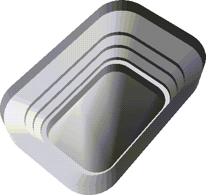
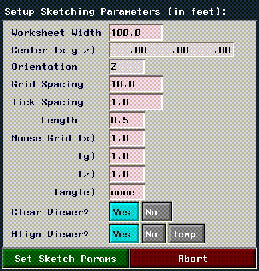
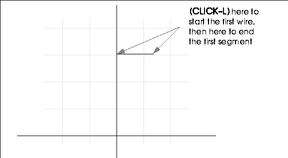
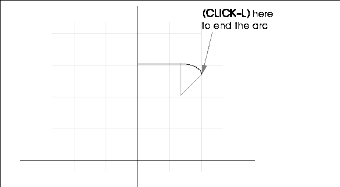
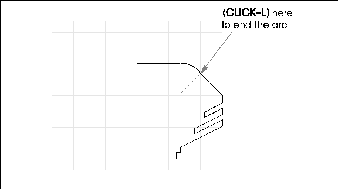
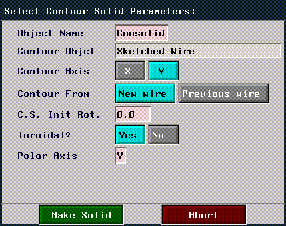
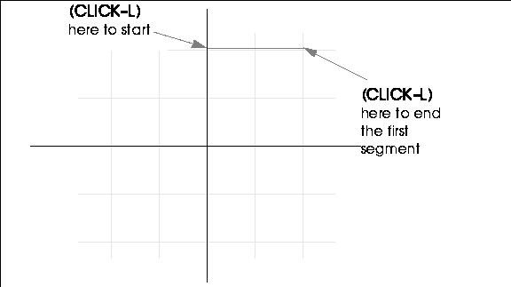
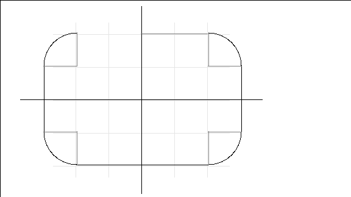
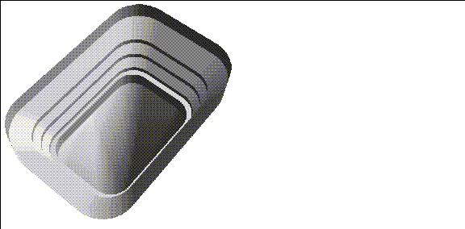

This chapter describes a simple technique for building a complete low-polygon count stadium environment in only a few steps.
In building this object we'll learn some new techniques, plus expand on some we learned before:
In this Chapter
A contour solid is a polyhedron created by scaling the cross section out to the contour. There are three basic steps in creating a contour solid:
Sketching the Contour Wire
In this section, we'll build the path wire. The path wire defines the "dimensions" of the stadium.
Building the Contour Wire
1. (CLICK-L) on GeoMenus>File>New Object>Contour Solid.

4. (CLICK-L) to place node right on the Y axis.
5. Move the cursor to the right, then (CLICK-L) again.

6. (ALT-L) and move the cursor straight down.
7. Move the mouse back up and (CLICK-L) as shown in Figure 15.5 to create the arc.

You can complete the rest of the wire using (CLICK-L) to insert nodes wherever necessary.

8. (CLICK-R) after you draw the last node, then (CLICK-L) on OK.
After you (CLICK-L) on OK to complete the first wire, you're prompted to enter the drawing parameters for the second wire (the path the contour wire follows).
Creating the Path Wire

9. Use the default parameters, then (CLICK-L) on Make Solid.
10. Draw a wire in the shape of a hockey rink. Start with a node straight up the Y axis.

11. Draw the arc for the first corner of the rink.
12. Now, complete the rest of the wire until you have a wire that looks like this:

13. (CLICK-R) after you draw the last node, then (CLICK-L) on OK.
14. (CLICK-L) on GeoMenus>Object Display>Shading.
The generated contour solid is a closed surface; all its normals are on the same side of the object, that is on the "inside" or the "outside."
Going Inside the Stadium
If your object looks like it does in Figure 15.12, that is, it looks normal when viewing it from the outside, you need to evert the object before you go inside of it.
15. (CLICK-L) on bodies on the element sensitivity menu.
16. (SHIFT-L) on the stadium, then (CLICK-L) on Evert.
17. Press the "y" hot key so that you are looking straight down at the top of the stadium.
18. Adjust the camera so that it looks something like this:

Make sure to use the GeoMenus>File>Save operation to save your work.
Save your Work
You've now completed an entire environment based on two simple sketched wires.
Congratulations!
Copyright © 1996, Nichimen Graphics Corporation. All rights reserved.